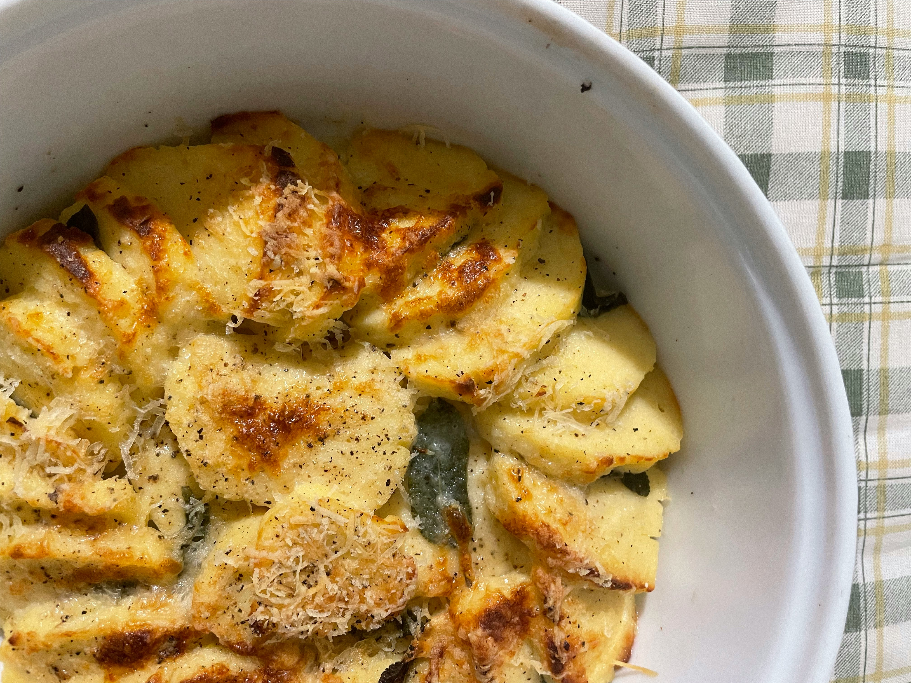

Potato Dauphinoise

Photo by Angela Sciortino on Unsplash
Description
For this rich and creamy potato gratin, the potatoes are par-boiled in the cream mixture, which allows their starch to help thicken the sauce. Adding bacon makes this a great main meal - serve with a sharply dressed leafy salad.
Ingredients
- 600ml/20fl oz semi-skimmed milk
- 2 garlic cloves, bashed
- 3 bay leaves, plus extra to garnish
- 2 thyme sprigs, plus extra to garnish
- 1 leek, thinly sliced
- 400ml/14fl oz double cream
- 900g/2lb waxy potatoes, scrubbed or peeled and thinly sliced (ideally on a mandolin)
- 6-8 rashers dry-cured, smoked streaky bacon, snipped into small pieces with scissors (optional)
- butter, for greasing
- 50g/1¾oz Parmesan, finely grated
- 50g/1¾oz Gruyère, grated
- salt and freshly ground black pepper
Steps
- Put the milk, garlic, bay leaves, thyme and leek into a pan, bring to the boil, then turn off the heat and leave to infuse for 1 hour. Strain the milk and discard the veg and herbs.
- Put the flavoured milk in a large saucepan, add the cream and tip in the potatoes and 1½ teaspoons of salt. Bring up to a simmer, stirring occasionally; as soon as the cream starts bubbling, immediately take the pan off the heat. Season with pepper.
- If using bacon, cook in a frying pan over a medium heat until golden and crisp, then drain and set aside.
- Grease a large, shallow baking dish with the butter. Use a slotted spoon to layer roughly half of the potatoes into the dish, then spoon over some of the cream mixture. Mix the cheeses together and sprinkle half over the potatoes, adding the bacon, if using. Cover with the remaining potatoes, pour over the remaining cream mixture and scatter with the remaining cheese. You can chill the dish overnight at this stage (see recipe tip).
- Preheat the oven to 180C/160C Fan/Gas 4. Cover the dish with foil and bake for 1 hour (add an extra 15 minutes if fridge-cold).
- Remove the foil, scatter with extra bay leaves and thyme plus a grind of pepper, then bake for 30 minutes, until the top is golden and the potatoes are tender.
Go back to Index